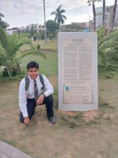

Nefi Moroni Escobedo Miranda | WDD 130

Hello! My name is Nefi Moroni Escobedo Miranda. I am 23 years old and I live in Arequipa, Perú. I am currently studying Chemical Engineering and Software Development. I am interested in combining science and technology to solve real-world problems. My goal is to become a researcher in the future, pursue a master's degree and a PhD abroad, and work in research-oriented companies where I can combine my knowledge of engineering and systems to develop innovative solutions. In addition to my academic pursuits, I had the opportunity to serve a mission in Trujillo, Peru, where I was the Secretary of Health. This role allowed me to work closely with the mission president, participate in various leadership councils, and develop organizational, communication, and leadership skills that have strongly contributed to my personal growth.